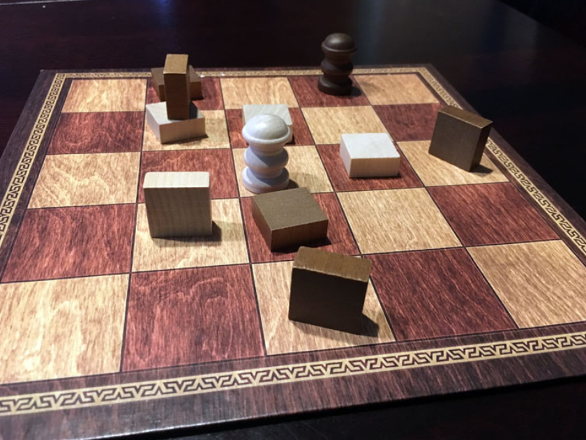

Welcome! I am a Gameplay Programmer with years of development experience. Beyond game development I have a love for cooking, the circus arts, and film! I am an absurdist, queer, and so excited to get started!

Physics based Party Game;
D-list Supervillains try to Steal from the Hero

Double down is a rogue-lite shooter, Gamble to beat The House

Using Tak to explore board game ai
Tak is a Board Game first conceived by Patrick Rothfuss. It is described as a simple but beautiful game, like chess but in the novel The Name Of the Wind. This was then designed and sold in the real world! The goal is to create a road from East to West or North to South. Much like chess, if you could just go twice in a row, the game would be over in a flash!
This is all secondary to the point of what I'm trying to achieve with this project, which is the exploration of Tree Searching Algorithms.
The set up for letting the player and the computer interact with the board and each other started with the Tiles and the Stones placed on them. The stones can be placed as Paths which create the Road, or as Walls which block roads. Finally each player gets a Capstone, which Counts as both.

With this Base we need to make the player and the computer actually speak the same language! The crux of this is to make this as small as humanly possible for the tree algorithms. Regardless of algorithm strength, missing information renders the process ineffective.
With this requisite setup out of the way we can get to the moment I’ve all been waiting for. I began by implementing MiniMax, the simple solution. It starts by generating every possible move for a given board. Then it generates every board for that and so on to the given depth. Finally it scores the boards and seeks the highest possible score. Deeper the search the better the move and the longer the process takes.

To attempt to address this I improved the minimaxing process by adding Alpha Beta pruning, so there would be less boards actually considered. This is a logical process to cut the amount of boards considered. This is done by comparing the quality of boards and concluding that the board and all deeper boards will be worse. Though this did help this wasn't the true issue.

After some time to research and some time away I came back to the real problem. Mini Maxing was generating hundreds of thousands of boardstates if looking any more than 4 or 5 moves ahead. This is the real issue , and so to solve this I decided to use a randomly based chess algorithm, the Monte Carlo Tree Search.
The main reason I like this algorithm is because it simulates how I encounter problems.
It starts with one board, generates a random next board.
Then creates a further move from the best board.
This means terrible moves will not be considered, and promising moves can be given more thought.
This also addresses the issue of too many boards generated, because this just generates as many boards as possible in a given time period.
This was a really fun project to put together and gave me a great excuse to look into interesting board game ai.
I also got to relearn the architecture I set up originally, as this project was interrupted several times.
But I also know that if I got to reset this from the ground up I would put more thought into how the board is quantified into information the algorithm can use.
Like I said at the beginning, missing information renders the process ineffective, so how I deal with the info is just as important as the info itself.
Feel free to email me at Henry.Bennett@mymail.champlain.edu, find me on LinkedIn at LinkedIn, or check out my resume Here!